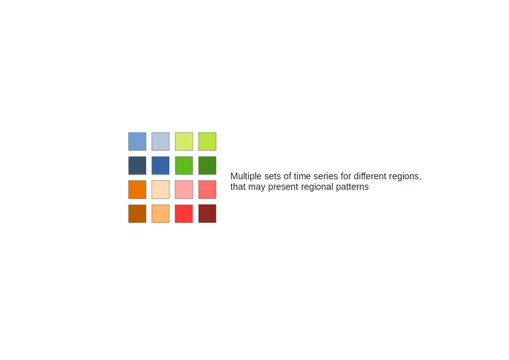
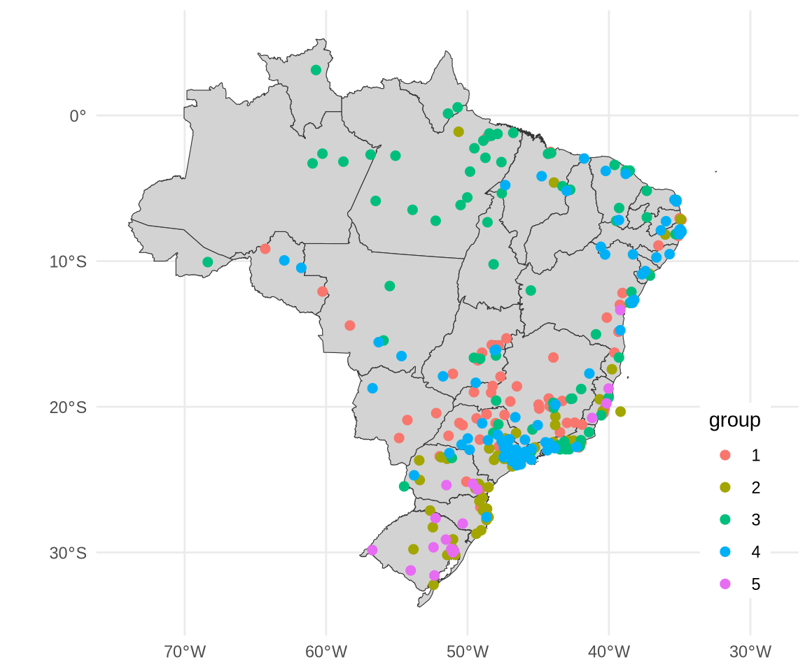

Subset Models for Multivariate Time Series Forecast
BDA 2024, Orléans
subsets
machine learning
Presentation at BDA2024 conference.
Introduction
- Previously presented at MulTiSA workshop (ICDE 2024)
- Abundant multivariate time series, good opportunity for forecasting machine learning methods
- Data may present intrinsic diversity of samples, affecting model’s performance on different parts of the input
- Global models: use all available time series
- Local models: use only time series pertaining to each sample
- Data subsets models: our proposal
Case example
- Dengue disease is transmitted by mosquitoes and is a Public Health concern. Record number cases on 2024 in Brazil, tendency to increase with climate change
- A typical forecasting model is targeted to predict number of cases based on climate indicators (rain and temperature)
- A global model would use data from all municipalities, facing difficulties related to distinct temporal and spatial disease transmission patterns
Objective
- Propose a subset modeling framework
- Accommodate regional variations across diverse units (e.g. municipalities)
- Cost-effective training with robust prediction capabilities in comparison with global models
Framework proposal
- Identify subsets within the dataset with similar patterns
- Train models for each subset
- Use the model trained on the subset data for prediction





Datasets
- Dengue dataset. Weekly cases count, from 2011 to 2020, for 333 municipalities.
- Climate dataset. Average maximum and minimum temperature, total precipitation. Same time and spatial units and coverage, derived from Copernicus ERA5-Land.
- All indicators were standardized (with zero mean and one SD)
Experimental setup
- Identify data subsets considering dengue cases and covariates patterns across municipalities with DTW distance.
- Select the optimum number of subsets (\(k\)) considering silhouette score
- Train random forest Global Model with and without the subset id feature information
- Train random forest Subsets Models
- Evaluate forecasting model’s performance on test data
Clustering results
- \(k = 5\) returned the highest silhouette score
- Partition sizes: \(g_1 = 69\), \(g_2 = 62\), \(g_3 = 82\), \(g_4 = 102\), \(g_5 = 18\)

Model results

Conclusions and next steps
- Subsets models rendered better performance than global models on 116 municipalities from 333 (34.83%)
- Subsets models overall performance is related to the partition’s size. Bigger partitions (more municipalities) have more training data.
- We are currently testing different clustering strategies (including constraints in partition size and featured-based approaches) and investigating different learners performance on model training
- Looking for datasets of different domains. Suggestions?
Thanks!
Contact and more info at